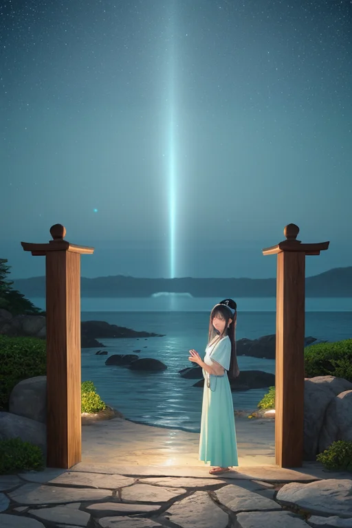

第一章 現実の千葉
あなたはまだ気づいていない。この土地にも、王がいることを。
成田山新勝寺の石段は、朝もやに濡れていた。早朝の参拝客の足音だけが、静寂を優しく切り裂く。ここは空の玄関口の町であり、同時に、千年を超える祈りの場でもある。人々は現世利益を願い、あるいはただ手を合わせる。その一つ一つの行為が、この土地の「感情密度」を、微かに、確かに高めていく。祈りが積もり、願いが沈殿する。それは見えない地層のように房総の地を形作り、時に、歪みの列島が孕む地殻の軋みと、不思議な共鳴を起こすこともあった。
その静謐な空間の一角、仁王門の影に、一人の青年が佇んでいた。潮風を思わせる水色の外套を纏い、その目は参道を行き交う全ての人々を、穏やかに見守っている。彼はチバリア・ゲート、この地に遣わされた47人の王の一人である。彼の王国「チバリア・ゲート」は、海風と入口を司る。成田の門前町も、九十九里浜に続く水平線も、全ては「入口」だ。人々が何かを始め、何かを受け入れるその瞬間を、彼はただ静かに観測し続けていた。
第二章 歪みの兆候
九十九里浜の水平線が、いつもよりわずかに歪んで見えた。潮風に混じる、微かな地の軋み。チバリア・ゲートは、浜辺に立つ観光客の誰よりも早く、その兆候を感知した。歪みは、この「入口」の王国の深部、養老渓谷の静寂な地層で生じ始めている。それは物理的な亀裂ではない。訪れる者、去る者、祈る者たちの心の襞に蓄積された、言い知れぬ「期待」と「別れ」の重みが、地脈に微妙な負荷をかけていた。
彼は目を閉じた。意識を門のように開く。成田山の読経、銚子の漁師の無念、養老の渓流に願いを託す人々の静かな祈り。それら全てが、この土地の「入口」を通り抜ける感情の風だった。その風の密度が、星から与えられた調整限界を、かすかに超えようとしている。妖精ゲイリアがそっと肩に止まった。「歓迎すべきものばかりではないのですね、王様」。彼は僅かに頷いた。歓迎と受容は、時にこれほど重いものか。歪みは、優しさの裏側で静かに育つ。
第三章 王の葛藤
鋸山の断崖から東京湾を望む。眼下をゆったりと横切る船の航跡は、白い潮線のように、やがて拡散して消える。彼はその静かな拡散を見つめていた。感情の風は、歓迎すべき来訪者だけを運ぶわけではなかった。歪みの微調整のためには、時に、ある出会いを遅らせ、ある別れをほんの一瞬早める必要がある。それは、星の論理では最適な調整だ。しかし今、その選択の一つ一つが、潮風に混じる磯の香りのように、彼の内側に澱のように残る。
「歓迎」とは何か。全てを受け入れることか。それとも、時に受け入れざるを得ない「別れ」や「遅れ」までも含むのか。九十九里浜の漁師が、荒天を避けて港に残る無念。その選択の微調整に、彼は関与している。結果としての安全の代償は、海への想いが澱むことだ。
彼は自問した。あなたの入口はどこか。この問いは、土地に生きる者へのものだけではない。この感情の風に洗われ、自らも「何か」を感じ始めた者への問いだった。彼の内側に、星の設計図にはない「戸惑い」という入口が、静かに開いていた。

第四章 妖精との対話
鋸山の山頂、地獄覗きの岩場から見下ろす東京湾は、鏡のように静かだった。ゲイリアは門王の隣に立ち、潮風に銀色の髪をなびかせながら言った。
「ここに立つ人々の多くは、『死』という入口を覗きに来る。でも、本当に見ているのは、その先の『生』です。祈りとは、入口の前で足を止め、向こう側の光を確かめる行為。私たちは、その一瞬の『止まり』を微調整するだけです」
彼女の目は、遙か銚子の漁火を見つめていた。
「漁師が荒天を避ける無念。それは魂の波が高ぶっている状態。私たちが調整するのは、その波が岸を越え、自分自身を飲み込まない程度の静けさ。安全という結果ではなく、嵐の後も港が『港』であり続けるための、ほんの少しの間です」
門王は黙って聞いた。彼の内側に生じた戸惑いも、一つの入口なのか。
「あなたが感じ始めたものも、立派な祈りですよ。星の設計図にない感情は、この土地があなたに開いた、新たな門。さあ、王よ。あなたの入口は、いま、どこに向かって開いていますか」
第五章 微調整と余韻
鋸山の山頂から見下ろす東京湾は、今日も穏やかだった。門王は、その静けさが妖精たちの微調整の総和であることを知っている。彼が調整するのは、物理的な波ではなく、人々の心に押し寄せる目に見えない波だ。成田山の参道を歩く人の足取りが、ほんの少し軽くなる。銚子の漁師が荒天を前に感じる諦めが、一瞬、別の可能性への扉を開く。それは、結果を変える奇跡ではない。ほんの一呼吸、選択肢が増える間を作る、静かな調整だ。
彼は今、自分の中に開いた戸惑いという入口を、静かに見つめていた。星の設計図にはないこの感情は、九十九里浜の潮風が運んできた、この土地からの贈り物なのか。歓迎すべき来訪者なのか。
答えは出なかった。ただ、養老渓谷のせせらぎのように、問いは流れ続ける。彼は微調整を続ける。海苔の磯の香り、落花生のほのかな甘み、醤油蔵が漂わせる深い香気の中を、人々の心の波が、大きく荒立てずに通り過ぎていくように。
あなたの入口はどこか。彼は今、静寂そのものが入口であることを、そっと学び始めていた。
あなたの町にも、王がいる。